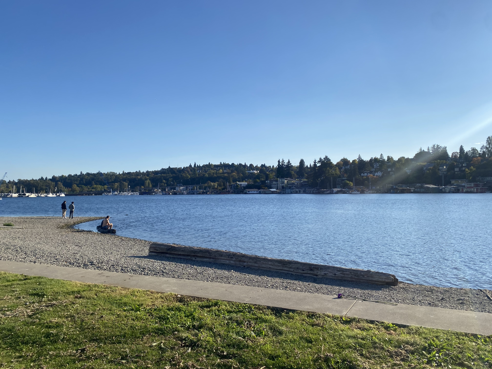

I am an international student from Delhi, India. I came to the USA for the first time last year and it has been a fun ride ever since. Initially, it was hard to be away from parents (it still is), but this experience has helped me be independent and overcome difficult situations alone.
| Name | Location link |
|---|---|
| Portage Bay | Portage Bay Location! |
| Miner's Landing Pier 57 | Pier 57 Location! |
| SEAFAB CAFE | SeaFab Cafe Location (it is right next to Portage Bay)! |
I love coffee and spending time by the water front. Within my first two weeks alone in Seattle, I went to Portage Bay, which was only an eight-minute walk away from my dorm, and just sat in the sun for 30 minutes. I also took some pictures while I was there and I have added one of them below!!
